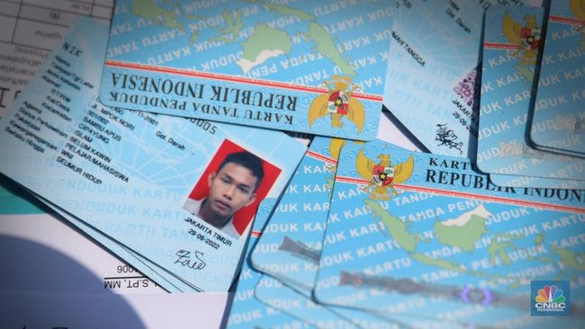

Cara Mengurus KTP Hilang/Rusak: Panduan Urus Beres!

Kartu Tanda Penduduk (KTP) adalah identitas wajib bagi setiap warga negara. Jika KTP Anda hilang atau
rusak, jangan panik. Ikuti panduan lengkap ini untuk mengurus KTP baru hingga "beres".
Siapkan dokumen-dokumen berikut sebelum memulai proses pengurusan KTP:
Surat Keterangan Kehilangan dari Kepolisian (untuk KTP hilang).
KTP lama (untuk KTP rusak, bawa aslinya).
Fotokopi Kartu Keluarga (KK).
Surat Pengantar dari Kelurahan/Desa (terkadang diperlukan, cek kembali di daerah Anda).
Pas Foto terbaru ukuran 2x3 atau 3x4 (jika diminta, biasanya sudah difoto di Dukcapil).
Penting: Selalu bawa dokumen asli dan beberapa lembar fotokopi untuk berjaga-jaga.
Langkah-Langkah Mengurus KTP
Lapor Kehilangan ke Kepolisian:
Datangi kantor polisi terdekat untuk membuat Surat Keterangan Kehilangan. Jelaskan kronologi
kehilangan Anda. Surat ini wajib untuk pengurusan KTP hilang.
Datangi Kantor Dinas Kependudukan dan Pencatatan Sipil (Dukcapil):
Bawa semua dokumen yang sudah disiapkan (Surat Kehilangan, KK, dll.) ke kantor Dukcapil di
wilayah Anda sesuai domisili KTP.
Pengisian Formulir & Verifikasi Data:
Ambil nomor antrean dan serahkan dokumen Anda. Anda akan diminta mengisi formulir permohonan KTP
baru. Petugas akan memverifikasi data Anda. Pastikan semua data sudah benar.
Pengambilan Foto, Sidik Jari, dan Tanda Tangan:
Jika KTP lama Anda sudah e-KTP, biasanya Anda tidak perlu foto ulang. Namun, jika ada perubahan
data atau KTP lama belum e-KTP, Anda akan difoto, diambil sidik jari, dan tanda tangan.
Pengambilan KTP Baru:
Setelah proses verifikasi dan perekaman data selesai, Anda akan diberitahu kapan KTP baru Anda
bisa diambil. Waktu pengambilan bisa bervariasi antara beberapa hari hingga beberapa minggu
tergantung antrean dan kesiapan blanko.
Estimasi Waktu & Biaya
Waktu Proses: Umumnya 3-14 hari kerja, tergantung ketersediaan blanko dan antrean
di Dukcapil daerah Anda.
Biaya: GRATIS. Pengurusan KTP (termasuk KTP hilang/rusak) tidak dipungut biaya
apapun sesuai peraturan perundang-undangan.
Hal Penting Perlu Tahu
Datanglah pagi hari ke kantor Dukcapil untuk menghindari antrean panjang.
Pastikan data di Kartu Keluarga (KK) Anda sudah sesuai dengan data diri Anda. Jika ada perbedaan,
segera urus perubahan KK terlebih dahulu.
Simpan baik-baik surat kehilangan dan tanda terima dari Dukcapil.
Video Tutorial
FAQ Khusus KTP
Q: Bisakah KTP hilang diuruskan oleh orang lain?
A: Umumnya tidak bisa karena memerlukan perekaman sidik jari dan foto wajah. Namun, tanyakan langsung ke
Dukcapil setempat untuk kondisi khusus (misal: lansia, sakit).
Q: Berapa lama masa berlaku KTP?
A: E-KTP berlaku seumur hidup selama tidak ada perubahan data.
Kontak Instansi Terkait
Dinas Kependudukan dan Pencatatan Sipil (Dukcapil)
Cek informasi kontak Dukcapil di situs resmi Pemerintah Daerah Anda.